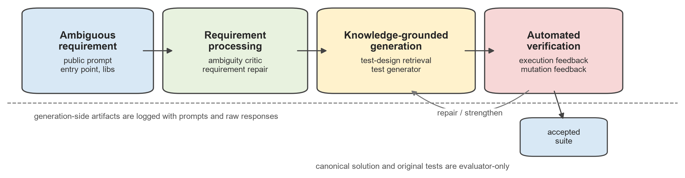
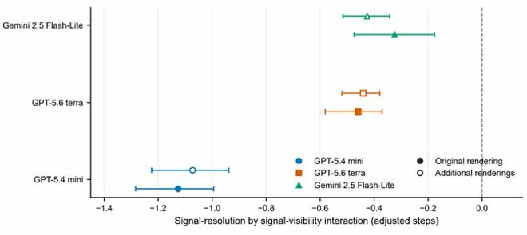

—

The University of Hong Kong
QS 2027 · #11Master’s degree in Innovative Design and Technology
Graduated with Distinction
I am a researcher with broad interests in artificial intelligence, currently exploring large language models and intelligent agents. I enjoy combining research with hands-on system development, and I am open to new problems and perspectives across the field.
—
Master’s degree in Innovative Design and Technology
Graduated with Distinction
—
Bachelor’s degree in Microelectronics Science and Engineering

Vol. 14, pp. 147769–147778

— Present
Researcher
Research on intelligent agents.
—
Researcher · Internship